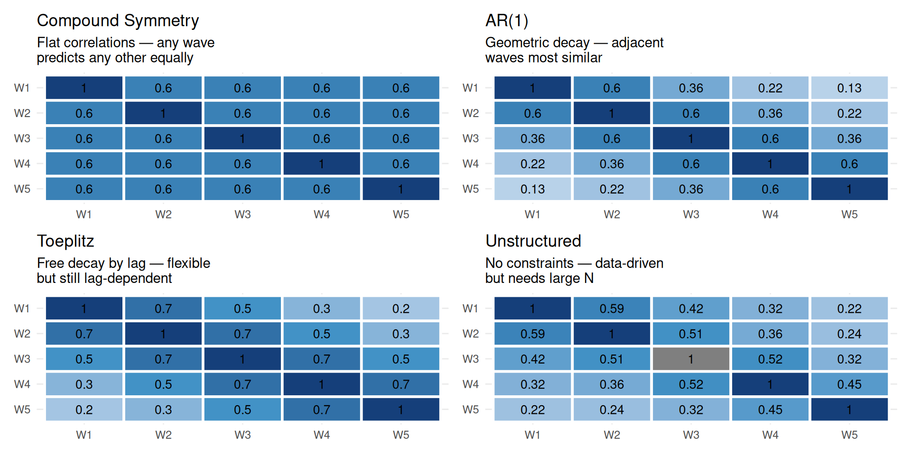

Code
make_cov_plot <- function(Sigma, title, subtitle = NULL) {
n <- nrow(Sigma)
D <- diag(1 / sqrt(diag(Sigma)))
Corr <- D %*% Sigma %*% D
wlabs <- paste0("W", 1:n)
data.frame(Corr) |>
setNames(wlabs) |>
mutate(row = wlabs) |>
pivot_longer(-row, names_to = "col", values_to = "r") |>
mutate(row = factor(row, levels = rev(wlabs)),
col = factor(col, levels = wlabs)) |>
ggplot(aes(x = col, y = row, fill = r)) +
geom_tile(color = "white", linewidth = 1) +
geom_text(aes(label = round(r, 2)), size = 3.5) +
scale_fill_gradient2(low = "#f7fbff", mid = "#4292c6", high = "#08306b",
midpoint = 0.5, limits = c(-0.1, 1)) +
labs(title = title, subtitle = subtitle, x = NULL, y = NULL) +
theme_minimal(base_size = 11) +
theme(legend.position = "none")
}
n <- 5
rho <- 0.6
CS <- matrix(rho, n, n); diag(CS) <- 1; CS <- CS * 4
AR1 <- outer(0:(n-1), 0:(n-1), function(i, j) rho^abs(i-j)) * 4
Toep <- outer(0:(n-1), 0:(n-1), function(i, j) {
c(1, 0.7, 0.5, 0.3, 0.2)[abs(i-j)+1]
}) * 4
UN <- matrix(c(4.0, 2.4, 1.8, 1.4, 1.0,
2.4, 4.2, 2.2, 1.6, 1.1,
1.8, 2.2, 4.5, 2.4, 1.5,
1.4, 1.6, 2.4, 4.8, 2.2,
1.0, 1.1, 1.5, 2.2, 5.0), n, n)
(make_cov_plot(CS, "Compound Symmetry",
"Flat correlations — any wave\npredicts any other equally") +
make_cov_plot(AR1, "AR(1)",
"Geometric decay — adjacent\nwaves most similar")) /
(make_cov_plot(Toep, "Toeplitz",
"Free decay by lag — flexible\nbut still lag-dependent") +
make_cov_plot(UN, "Unstructured",
"No constraints — data-driven\nbut needs large N"))